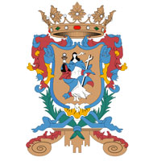

Las condiciones climáticas del estado están determinadas por la latitud, lejanía del mar, los efectos de las masas de aires polares, así como de los fenómenos de condensación orográficas, que se desarrollan en las laderas de las montañas y de los contrastes de altitud entre valles, bajíos y serranías. Geográficamente se distinguen tres zonas climáticas bien definidas en el estado. El clima semiárido localizado principalmente en la región norte; el clima cálido subhúmedo hacia el sureste y este, y clima templado subhúmedo en el resto del Estado. La precipitación promedio anual ronda los 650 mm, con lluvias presentes principalmente durante el verano. La vegetación de Guanajuato está compuesta principalmente por matorral crasicaule, matorral micrófilo, matorral desértico rosetófilo y matorral submontano, los pastizales mezquitales y la selva baja caducifolia. El estado posee una interesante biodiversidad; cuenta con una gran riqueza ecológica en un conjunto de ecosistemas terrestres y acuáticos. Sin embargo, tanto las poblaciones animales como vegetales han estado en ocasiones expuestas a presiones ambientales, a cambios genéticos, a aislamientos diversos y, en su mayor parte, al constante acecho y explotación irracional del hombre, quien ha provocado su disminución numérica y, en otros casos, su extinción. El crecimiento de la población, el uso de nuevas áreas de cultivo, la utilización de otras zonas para la ganadería, la explotación de minerales, la contaminación, la cacería no controlada, etcétera, aceleran el proceso de extinción de plantas y animales. El estado de Guanajuato se ubica geográficamente en una zona estratégica, en la que históricamente han confluido las distintas vías de comunicación que han enlazado el intercambio comercial de las tres principales áreas metropolitanas del país (Ciudad de México, Guadalajara y Monterrey); por lo que se convirtió en zona de paso, abastecimiento y provisión del comercio interno. No obstante, tradicionalmente su peso estuvo fundamentado en el sector económico primario; siendo la minería durante la época colonial, y la agricultura durante los siglos XIX y XX, las más sobresalientes. Sin embargo, desde mediados de la década de 1990, inició un proceso de industrialización y expansión del sector servicios, especialmente el turismo, que diversificó su economía y acelero su crecimiento. Esto ha transformado a la entidad en una de las de mayor incidencia en el crecimiento económico nacional.
